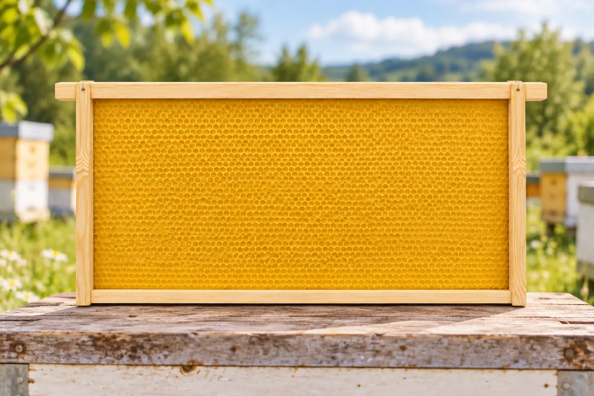

Last updated: 26 September 2026

Frequently Asked Questions
Both are British Standard shallow super frames. SN1 has straight side bars and needs a separate spacing system, while SN4 has Hoffman side bars and is self-spacing.
A DN4 is a British Standard deep brood frame with a narrow top bar and Hoffman self-spacing side bars. It is commonly used in standard National and WBC brood boxes.
Hoffman describes self-spacing side bars. The bars are wider near the top so adjacent frames touch at the shoulders and maintain their spacing automatically.
No. A 14×12 frame requires an extra-deep 14×12 brood box. Standard National supers can still be used above it.
Standard National and WBC hives both use British Standard DN frames in the brood box and SN frames in the supers, although the hive bodies themselves are different.
A-grade normally describes the supplier's timber quality or finish. It does not change the DN, SN, Hoffman or other dimensional frame specification.